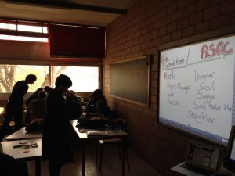

Passiamo all’azione e lo facciamo all’inizio del nuovo anno. In realtà c’è della pura casualità in questa coincidenza temporale, ma ci sembra beneaugurante.
A gennaio dunque scendiamo in campo e torniamo sui banchi di scuola. Il team di OpenPompei sarà infatti l’ “alfiere” dell’Istituto Tecnico Industriale Augusto Righi di Napoli in questa prima fase del progetto A Scuola di OpenCoesione, un progetto di didattica innovativa in collaborazione tra MIUR e DPS tramite il quale si vogliono coinvolgere insegnanti e studenti in tutta Italia nella conoscenza e nel monitoraggio dei progetti finanziati dalle politiche di coesione nel proprio territorio. Sono sette le scuole pilota in questo primo periodo, tra le quali quella napoletana che noi affiancheremo nel ruolo di “alfieri” cioè come braccio destro degli insegnanti e punto di raccordo con il centro romano. Nella seconda fase del progetto invece, a partire da febbraio, allargheremo il raggio d’azione anche ad altre scuole del territorio campano con un occhio di riguardo su Pompei, luogo fulcro del nostro progetto.
Gli ultimi mesi d’inverno ci vedranno impegnati anche nell’organizzazione di un week end di monitoraggi civici in collaborazione con Monithon (come avevamo anticipato qui) in cui aggregare i volenterosi cittadini attivi che abbiamo incontrato durante i nostri viaggi, oltre gli studenti di A Scuola di Open Coesione. Un week end che sia solo l’inizio di un’iniziativa di monitoraggio dei progetti finanziati con le risorse per la coesione che si prolunghi nel tempo, soprattutto sui progetti finanziati per i beni confiscati. La scheda di monitoraggio su questi ultimi è in progress e aperta a chiunque voglia dare il proprio contributo (basta andare qui). In un territorio come quello campano cittadini che monitorano e controllano ciò che viene fatto o non fatto con le risorse pubbliche possono essere una via per bloccare o disincentivare azioni poco lecite? Noi pensiamo di si.
Arrivederci a gennaio, dunque. Queste sono solo due delle diverse azioni che scandiranno il nostro 2014 e speriamo che ci seguirete. Nel frattempo auguri a tutti, di buon Natale e di un anno felice.
{kind=link}